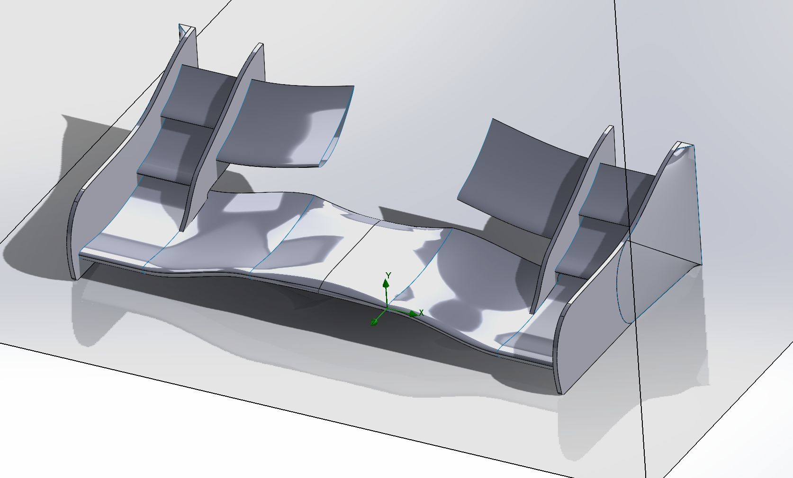
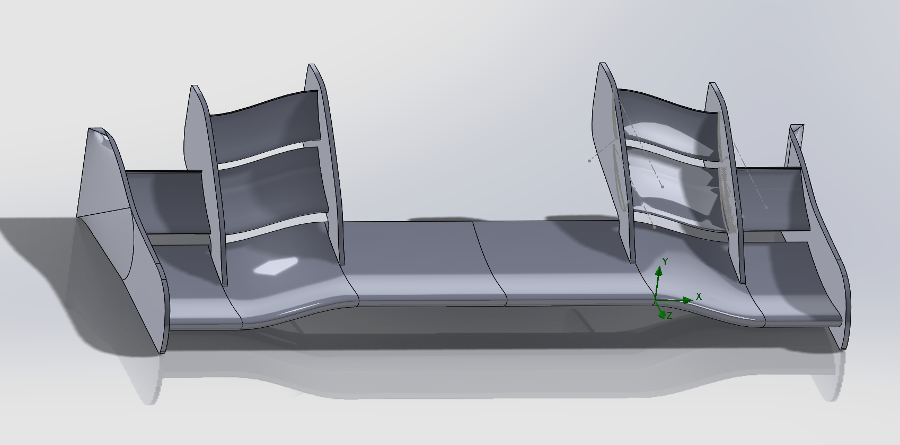
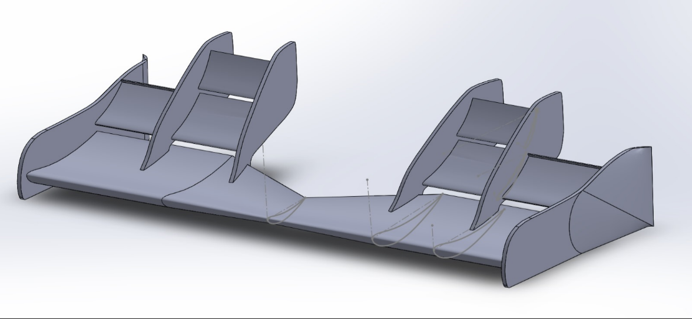
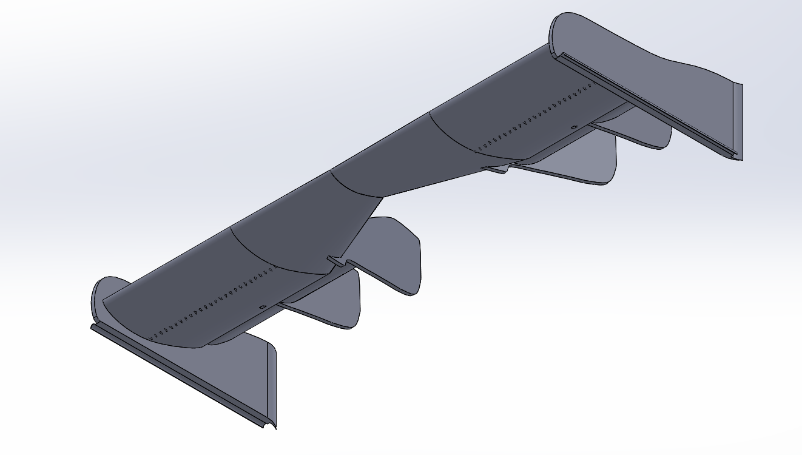
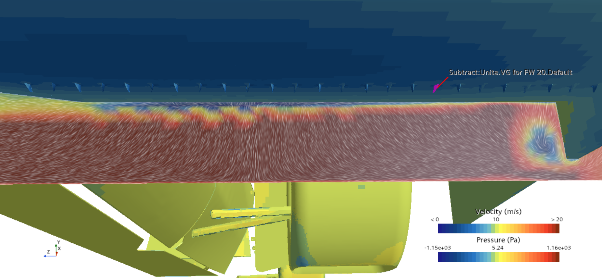
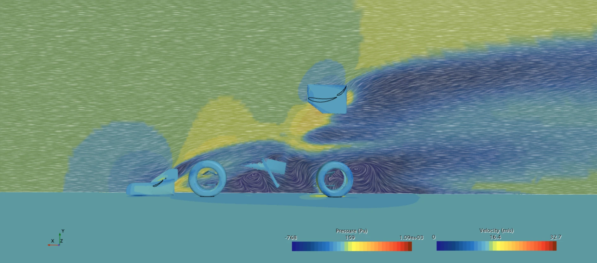
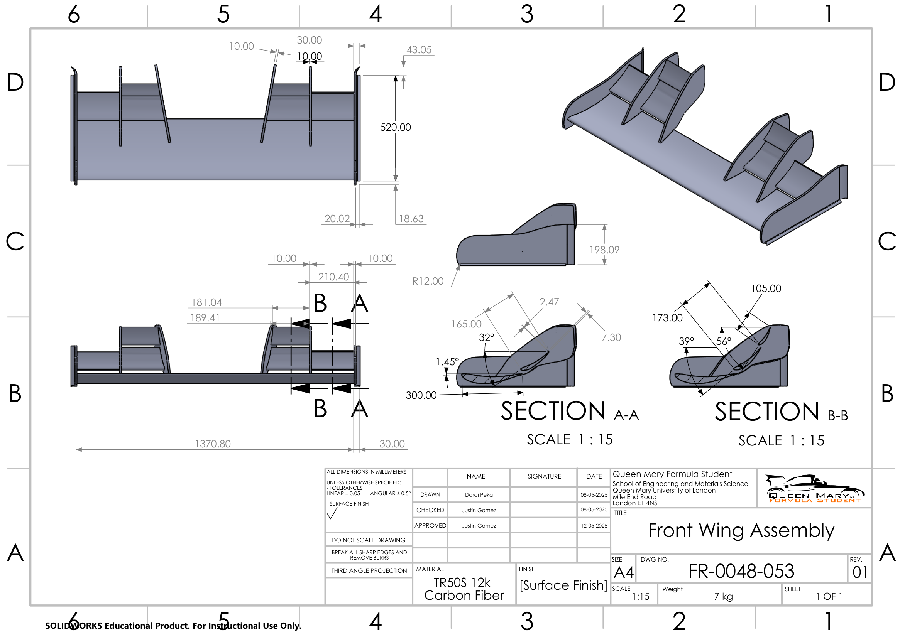

I designed the front wing for the Queen Mary Formula Student IC25 car, from December 2023 to February 2025, as part of the aerodynamics department.
The front wing is the main downforce-producing component on this car, balanced against mass and cost on a car concept built around packaging and adjustability rather than an aero package.
The wing combines two- and three-element sections, with endplates shaped to route flow outboard of the front tyres and shed the resulting vortices clear of them.
Eppler E423 was selected as the base aerofoil and retained throughout. It is a reliable aerofoil for lift production at low Reynolds numbers and considerably easier to manufacture than a more aggressive section such as the Selig S1223.
Across five design iterations the wing went from 82 N of downforce at a 3.15 downforce-to-drag ratio to 181.6 N at 5.41.
Design Evolution
The department target was a downforce-to-drag ratio of at least 4:1, alongside a manufacturability constraint. The team's experience with aero-related manufacturing was very limited; therefore, geometry that was difficult to lay up was unusable for the composites department.
Each iteration removed a geometric feature and produced more downforce than the previous one. The positive-camber main section, the sweep, the taper and the vortex generators were each removed in turn. Losses were recovered by reconfiguring element angles, overlaps and slot gaps.
Every iteration below was simulated at the department standard of 15 m/s. The initial concept was run in SolidWorks Flow rather than STAR-CCM+, so its numbers are indicative only.

Initial concept
82 N downforce · 26 N drag · L/D 3.15
Positive camber on the main element, swept surfaces, complex endplate geometry. The element gaps were so inconsistent that the geometry could not be meshed reliably, so this one never made it into STAR-CCM+.

Iteration 1
140 N downforce · 33 N drag · L/D 4.24
The two- and three-element sections were swapped to fit the FSUK rules, and the main element was reshaped to follow the aerofoil so it produced downforce instead of lift. Gurney flaps were added and account for most of the downforce gain.

Iteration 2
150 N downforce · 32 N drag · L/D 4.69
Sweep removed from every element, which made the surfaces flat and constant-section and therefore possible to lay up. A taper was added through the middle of the main element to clear the new chassis, and the inboard mounting plates were revised at the same time.

Iteration 3
158.9 N downforce · ~33 N drag · L/D 4.82
Vortex generators added to the main element to re-energise the boundary layer, with the endplates reshaped to be simpler to manufacture. 6.7% more downforce for a 2.4% drag penalty.
Final design
181.6 N downforce · 33.6 N drag · L/D 5.41
Taper and vortex generators both removed. The main element keeps a uniform chord along its span, the endplates are flat with a simple outward sweep, and the three elements were configured to 2°, 39° and 56° with 17 mm and 12 mm slot gaps to hold the flow attached at those angles. The best aerodynamic performance of every iteration, and the simplest to manufacture.
A weighted decision matrix across manufacturing cost, lead time, simulation results, mass and manufacturability scored the final design 65 against 25 for the initial concept.
Vortex Generator (VG) Testing
Increasing the elements' angles of attack in iteration 2 resulted in higher downforce figures but showed the flow separating off the main element before it reached the top element. The VGs in iteration 3 were the answer to the problem, as shown by their aerodynamic performance. I removed them from the final design for the following reasons:
The fins require meticulous testing of 3D printing settings to print a large number of identical ones.
Using more adhesive for mounting increased composites department costs.
Simulation showed them sitting too far upstream, with separation still beginning earlier than expected.
The position of the VGs is flow-sensitive, making precise mounting difficult.
The next iteration was further simulation of the three-element setup, ensuring the flow stayed attached without VGs. This exceeded the previous result, 181.6 N against 158.9 N, on simpler geometry that cost less to manufacture.

Flow visualisation showing earlier separation than expected, despite the VGs.
Simulation Approach
Initial use of JavaFoil for element gaps and overlaps. Geometry replicated in SolidWorks, then the wing was solved in STAR-CCM+ at 15 m/s flow velocity.
From iteration 2 onwards, the wing was simulated with the full vehicle. This was done to analyse the wing wake and the aerodynamic behaviour of the rest of the car. Whole-car figures sat around 225–232 N of downforce against 174–175 N of drag.
Making the geometry meshable was the first design constraint. Custom surface meshes were applied to flow-sensitive components (e.g., front wing), while a global mesh setting was set up for the bluff body of the car and the domain.
Runs were carried to residual convergence rather than a fixed iteration count.

Later runs solved the wing on the full car, to demonstrate its effect on the flow over the rear wing and inspect the stagnation at the tyre.
Material Selection and Rule Compliance
Material selection was run as its own weighted comparison in Ansys EduPack, against the loads the FSUK rules specify: a 200 N distributed load over 225 cm² with under 10 mm deflection (T8.4.1), and a 50 N point load with under 25 mm deflection (T8.4.2), plus minimum edge radii on all exposed surfaces (T8.3.1).
Stiffness-density, strength-density and cost-stiffness comparisons put carbon fibre–epoxy ahead on every performance parameter and behind only on cost, scoring 72 against 63 for glass fibre and 53 for both cast aluminium and stainless steel. Stainless steel is stiff and lower cost but too dense for a component mounted at the front of the car. Sponsorship from EasyComposites eased the cost of epoxy orders, so the fibre choice was based on performance.
The deflection cases were checked separately. The composites lead ran the distributed load case in Ansys, which returned 0.93 mm against the 10 mm limit. This was done on an isotropic model at fibre modulus rather than a laminate, so the true figure is several times that and still comfortably inside.
Engineering Drawing
The wing was released for manufacture as FR-0048-053 Revision 01 in May 2025, drawn by me and checked and approved by the Chief Engineer. Due to time and material constraints in both our composites department and the university workshop, the wing was not built for the season.

Sections A-A and B-B contain the numbers the design was configured on: 1.45° on the main element and 32° on the inboard two-element section, 39° and 56° on the outboard three-element section. R12 edge radii sit well clear of the 5 mm and 3 mm minimums in T8.3.1.
Modelled in OptimumLap, the final package returned a 63.3 s lap on the 2015 FSUK endurance track: 0.32–0.34 s faster than the VG design, and 1.74 s faster than the initial aero package, on less material and at lower cost.
Limitations
The team has no wind tunnel able to match the Reynolds numbers of the CFD, and a 3D-printed scale model would only support smoke or tuft flow visualisation. Track testing the manufactured wing was considered the most practical and cost-effective validation method.
One early iteration used a self-modified E423 section rather than the actual profile, which may have affected that run's numbers. A standard E423, configured in JavaFoil, was used for every other iteration.
The final design is not the lightest one. Downforce-to-mass was traded for geometry the team could reliably manufacture in its first year of building a wing.
Future Work
Validation: Run half the wing at full scale in the low-speed wind tunnel and apply symmetry to the missing half for force measurements. This can be accompanied by particle image velocimetry (PIV) or smoke and tuft visualisation based on available team resources.
Mesh convergence study: The iterations were run with similar settings that ensured residual convergence, but a mesh sensitivity study was not conducted. A GCI study should be conducted to calculate discretisation error and balance mesh refinement with available computing power.
Simulation configurations and post-processing: The aerodynamic package must be run at different vehicle configurations such as yaw during cornering. Post-processing should include longitudinal pressure sweeps to analyse the wake from the components, the flow near the tyre, and the interaction between the aero package and the rest of the car.